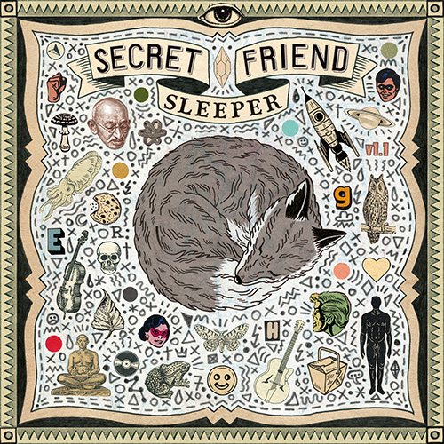

Pineapple upside down cake slice + coffee of your choice
$9.99
Now playing
Now Playing

Diving In a Sea of LightSecret FriendPlaying
Set the vibe
Chill
Lively
Inside22°
18°Partly cloudy outside · light breeze from the west · sunset 8:42 PM
Around Town
E
@Elle933912m
LOST DOG - 'Fergie' is a 2 year old minature schnauzer, last seen this morning running out my door chasing a bird @ Spring and 17th. #schnauzer#lostdog
N
@dr_nevin_li1h
Free live music therapy for cats, every Saturday at #donsveggieburgers
M
@Mark_freedom2h
Does anyone have a spare abacus? Hit me up - I need to count a lot of things urgently #helpwanted
B
@bin_chicken_223h
psa the tip is open till 4 today, not 2. learned this the hard way #localnews